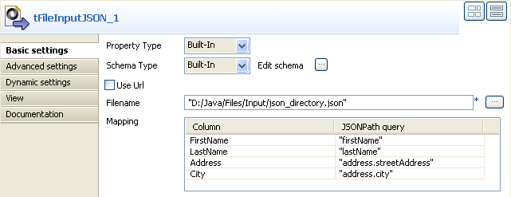

|
Famille de composant |
File | |
|
Fonction |
Le composant tFileInputJSON lit un fichier JSON et extrait les données en fonction du schéma sélectionné. | |
|
Objectif |
Ce composant ouvre un fichier et le lit afin d’isoler les données en fonction des schémas décrivant la structure de ce fichier et d’envoyer ses données et schémas au(x) composant(s) suivant(s) via une connexion Row. | |
|
Basic settings |
Property type |
Peut être Built-in ou Repository. |
|
|
|
Built-in : Propriétés utilisées ponctuellement.. |
|
|
|
Repository : Sélectionnez le fichier de propriétés du composant. Les champs suivants sont alors pré-remplis à l’aide des données collectées. |
|
|
Schema et Edit Schema |
Un schéma est une description de lignes, i.e., il définit le nombre de champs qui sont traités et passés au composant suivant. Le schéma est soit local (Built-in) , soit distant dans le Repository. |
|
|
|
Built-in : Le schéma est créé et conservé ponctuellement pour ce composant seulement. Voir également le Guide utilisateur de Talend Open Studio. |
|
|
|
Repository : Le schéma existe déjà et est stocké dans le Repository. Ainsi, il peut être réutilisé dans divers projets et Job designs. Voir également le Guide utilisateur de Talend Open Studio. |
|
|
Use URL |
Cochez cette case pour récupérer les données directement à partir d’internet. URL : entrez le chemin d’accès à l’URL à partir de laquelle récupérer les données. |
|
|
Filename |
Nom du fichier à partir duquel récupérer les données. |
|
|
Mapping |
Column : reflète le schéma tel qu’il est défini dans l’éditeur Edit Schema. JSONPath Query : Saisissez les champs à extraire de la structure JSON d’entrée. |
|
Advanced settings |
Advanced separator (for numbers) |
Cochez cette option pour modifier les séparateurs utilisés pour les nombres : Thousands separator : définissez le séparateur utilisé pour les milliers. Decimal separator : définissez le séparateur utilisé pour les décimaux. |
|
|
Encoding |
Sélectionnez l’encodage à partir de la liste ou sélectionnez Custom et définissez-le manuellement. Ce champ est obligatoire pour la manipulation des données des bases de données. |
|
|
tStatCatcher Statistics |
Cochez cette case pour collecter les données de log au niveau du Job, ainsi qu’au niveau de chaque composant. |
|
Utilisation |
Utilisez ce composant pour lire un fichier JSON et séparer les données en fonction des schémas identifiés dans ce fichier. | |
|
Limitation |
n/a | |
Ce scénario est de deux composants et permet de lire un fichier au format JSON et d’en extraire les données.

Procédure 13.7. Déposer et relier les composants
Glissez les composants tFileInputJSON de la famille File et tLogRow de la famille Logs & Errors à partir de la Palette dans le Job designer.
Reliez les composants entre eux via des connexions de type Main > Row.
Double-cliquez sur le composant tFileInputJSON pour paramétrer ses propriétés dans l’onglet Basic settings de la vue Component :

Procédure 13.8. Configurer les composants
Si votre schéma est déjà stocké sous le noeud Db Connections dans le Repository, sélectionnez l’option Repository dans le champ Schema Type puis choisissez les métadonnées appropriées à partir de la liste.
Si vous n’avez encore défini aucun schéma, sélectionnez l’option Built-in et renseignez manuellement les informations de connexion et la structure des données dans un schéma.
Cliquez sur le bouton [...] du champ Edit schema pour ouvrir une boîte de dialogue dans laquelle vous pouvez définir le schéma à afficher en sortie.
Cliquez sur le bouton OK pour fermer la boîte de dialogue. Dans la zone Mapping, les éléments du champ Column sont alors renseignés automatiquement selon le schéma que vous venez de définir. Dans cet exemple, le schéma comporte quatre colonnes FirstName, LastName, Address et City.
Dans le champ Filename, renseignez le chemin d’accès au fichier JSON dont vous voulez récupérer les données. Si les données sont stockées à distance sur Internet, cochez la case Use URL puis, de la même façon, renseignez l’URL d’accès au fichier à traiter. Dans cet exemple, le fichier traité se présente comme suit :

Dans la zone Mapping, les lignes du champ Column sont déjà renseignées. Pour chacune d’elle, indiquez dans le champ JSONPath query le niveau de l’arborescence sur lequel récupérer les données.
Dans le Job designer, double-cliquez sur le composant tLogRow pour paramétrer ses propriétés dans l’onglet Basic settings de la vue Component.

Cliquez sur le bouton Sync Columns pour récupérer le schéma du composant précédent.
Procédure 13.9. Enregistrer et exécuter le Job
Appuyez sur Ctrl+S pour enregistrer votre Job.
Appuyez sur F6 ou sur le bouton Run de l'onglet Run pour l’exécuter.

Le Job retourne les informations du client selon les paramètres sélectionnés dans le schéma.